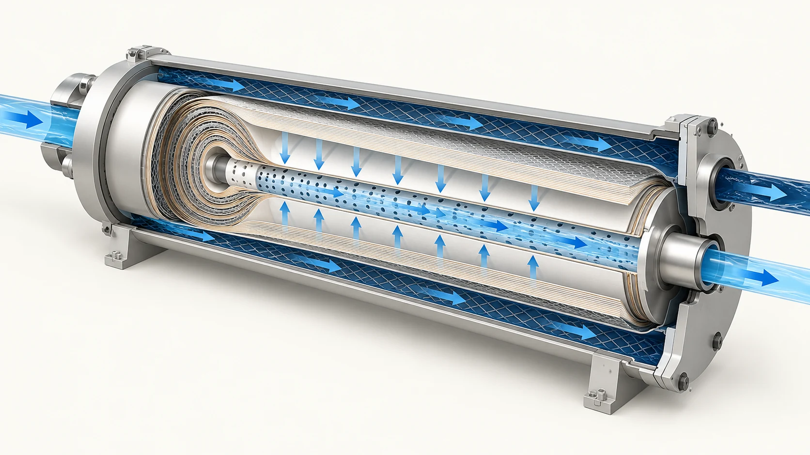

Սահմանումներ և օրինակներ
Դիտարկված աղապահումը սովորաբար հաշվվում է (1 − permeate-ի խտություն ÷ feed-ի խտություն) × 100%։ Salt passage-ը 100% հանած պահումն է։ Flux-ը permeate-ի հոսքն է՝ բաժանած թաղանթի ակտիվ մակերեսին, իսկ recovery-ն՝ permeate-ի հոսքը՝ բաժանած feed-ի հոսքին։ Գրանցեք նմուշի տեղը, չափման մեթոդը, շահագործման պայմանները և նորմալացված լինելը։
Նոսր իդեալական լուծույթների համար ուսուցողական մոտարկումն է π = RTΣCi՝ համատեղելի միավորներով։ Մատակարարի օրինակում 2 g/L NaCl-ը 25°C-ում տալիս է C≈0.0342 mol/L և π≈169 kPa (1.69 bar)։ Սա մոտարկում է, ոչ ծովաջրի ակտիվության ամբողջական մոդել։ Աղյուսակի սխալ միավորը բացահայտվում է․ NaCl 34.2 և MgSO₄ 16.7 արժեքները mmol/L են (0.0342 և 0.0167 mol/L), ոչ թե mol/L։
LP22-8040 օրինակի համար նշված են 99.7% կայուն պահում, 10,500 GPD և 400 ft²․ բաժանմամբ ստացվում է 26.25 GFD։ Դրանք տվյալ մոդելի արժեքներ են և համեմատելի են միայն նշված փորձարկման պայմաններում․ դրանք համակարգի երաշխիք չեն։
Պայմաններ և սահմանափակումներ
Ավելի բարձր արդյունավետ ճնշումը կարող է մեծացնել ջրի flux-ը․ ջերմաստիճանը փոխում է մածուցիկությունն ու աղի տեղափոխումը, իսկ feed-ի աղայնությունը մեծացնում է օսմոտիկ ճնշումը։ Concentration polarization-ի պատճառով թաղանթի մակերևույթի խտությունը կարող է գերազանցել feed-ի խտությանը։ Արդյունքը կախված է թաղանթից, տարրերի դասավորությունից, recovery-ից և փորձարկման մեթոդից։
Օգտակար գնահատման համար տվեք ամբողջական ջրային անալիզ, feed-ի և նպատակային permeate-ի որակ, պահանջվող հոսք, ջերմաստիճան, pH, recovery, ճնշում, նախամշակում և նորմալացված միտումներ։ TDS-ը միայնակ չի ցույց տալիս նստվածք առաջացնող իոնները, silica-ն, օրգանական նյութերը, օքսիդանտները կամ աղտոտման ռիսկը։ Նյութը հիմնված է մատակարարի տեխնիկական նյութերի և ընդհանուր սկզբունքների վրա, ոչ նախագծի հաստատում կամ շահագործման հրահանգ։
Հաճախակի հարցեր
99.7% տարրի պահումը երաշխավորո՞ւմ է նույն պահումը կայանում։
Ոչ․ արդյունքը կախված է feed-ից, պայմաններից, տարրի տարիքից, աստիճաններից, կնիքներից, խառնումից և չափումից։
Միայն TDS-ը բավարա՞ր է RO կամ NF ընտրելու համար։
Ոչ․ կարևոր են իոնները, նպատակը, recovery-ն, նստվածքի ռիսկը և գործընթացի սահմանափակումները։
Flux-ը նույնն է, ինչ permeate-ի արտադրողականությո՞ւնը։
Ոչ․ flux-ը նորմալացվում է մակերեսով, իսկ արտադրողականությունը կախված է նաև մակերեսից և համակարգից։
Կապակցված տեխնիկական ուղեցույցներ
Թաղանթների գիտելիքի կենտրոն · Բոլոր ռեսուրսները · Կարդացեք այս ուղեցույցը անգլերեն · Պահանջեք ջրի անալիզի գնահատում
Սահմանափակ գնահատման համար ուղարկեք մոդելը, ջրի ամբողջական անալիզը, feed-ի և նպատակային ջրի որակը, պահանջվող հոսքը, ջերմաստիճանը, pH-ը, recovery-ն, նախամշակումը և շահագործման պատմությունը։ Վերջնական նախագիծն ու շահագործումը ստուգեք ճշգրիտ մոդելի ընթացիկ ձեռնարկով, ջրի քիմիայով և տեղանքի հաստատված ընթացակարգերով։